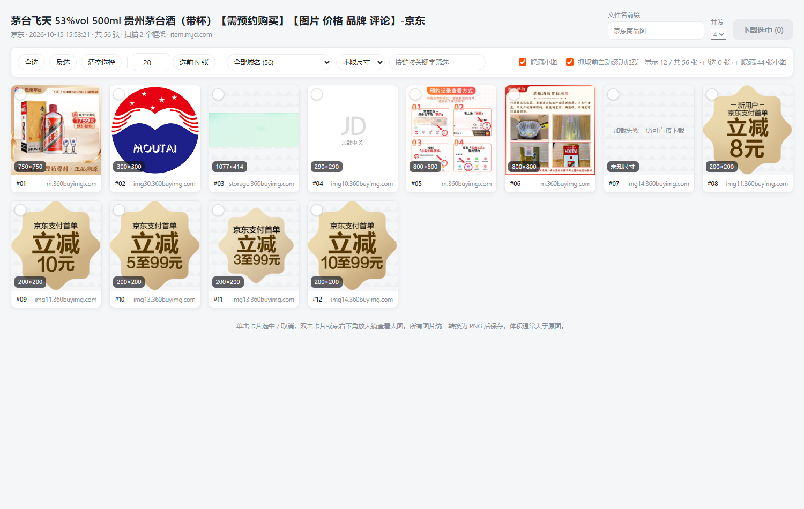
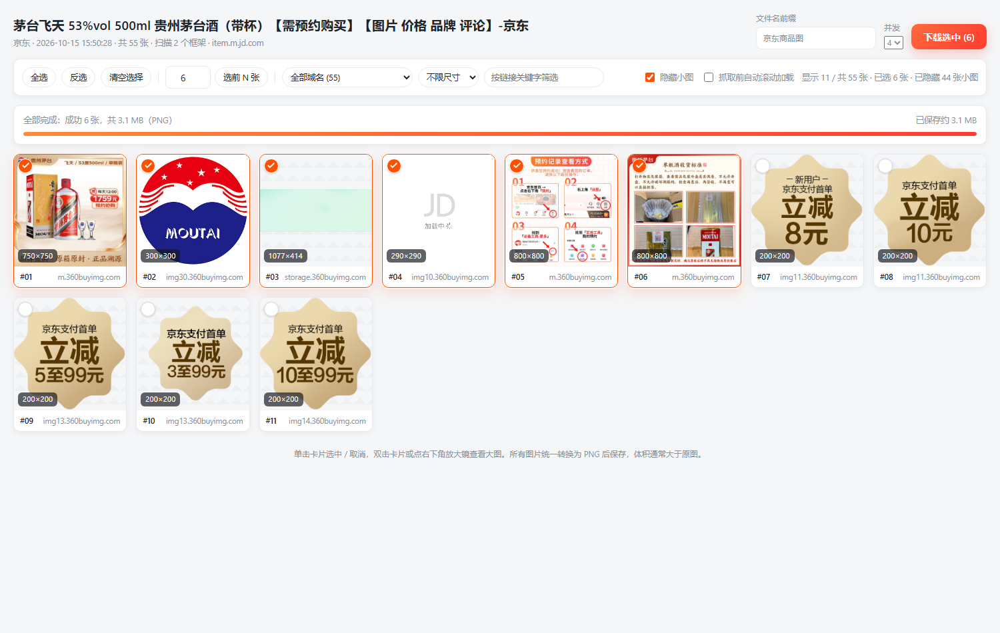

手动收集的麻烦
- 每张图都要右键「图片另存为」，几十张图就是几十次重复操作
- 详情长图在
desc.alicdn.com、dx.3.cn这类 iframe 内，右键根本选不中 - 存下来的往往是列表页的缩略图地址，放大后模糊
- 结果里混着 logo、图标、二维码，需要一张张排除
Chrome 扩展 · Manifest V3
在淘宝 / 天猫、京东、拼多多的商品详情页点一下，跨 iframe 采集主图与详情长图， 自动剥离缩略图后缀还原高清原图，勾选你需要的图片，批量下载为 PNG。

主图要逐张右键另存，详情长图藏在 iframe 里根本点不到，存下来的还常常是 50×50 的缩略图。
desc.alicdn.com、dx.3.cn 这类 iframe 内，右键根本选不中从采集到落盘，每一步都按电商详情页的真实结构设计。
详情页右下角悬浮按钮，点击即开始采集，不遮挡客服与购物车浮层。SPA 切换商品后按钮状态自动重置。
向页面内所有 frame 广播采集指令，识别 18 项懒加载属性、srcset 最高清项、CSS 背景图与页面内嵌 JSON 中的图片地址。
剥离 _430x430q90 这类尺寸后缀，把 /n5/jfs/ 归一化为 /jfs/，丢掉 imageMogr2 裁剪参数，拿到的是原图地址。
过滤图标、logo、占位图与静态资源域名，宽高都小于 120px 的图片直接丢弃，同一张图的不同尺寸只保留最清晰的一张。
新标签页网格展示，支持全选、反选、选前 N 张、按域名与尺寸筛选、关键字搜索，双击查看大图并可用方向键切换。
并发取图并转码为真正的 PNG，实时显示进度与体积，失败项标明原因（如防盗链）并可一键重试。

逐个平台适配了详情页结构、图床域名与缩略图规则，而不是套一层通用逻辑。
item.taobao.com/item.htm 与 detail.tmall.com 详情页desc.alicdn.com 等 iframe，跨 frame 汇总_430x430q90、_.webp 等尺寸后缀还原原图item.jd.com/<sku>.html 详情页dx.3.cn iframe，且使用 data-lazyload 懒加载/n5/jfs/、s450x450_jfs 归一化为 /jfs/ 原图路径mobile.yangkeduo.com/goods.html 前台商品页mms.pinduoduo.com/goods/ 页面imageMogr2 与 _400x400 等裁剪参数四步完成安装，无需上架商店，全过程不到一分钟。
把项目下载到本地并解压，得到扩展根目录。
ecom-image-grabber/
在地址栏进入扩展管理页，并打开右上角的「开发者模式」。
chrome://extensions/
点击左上角「加载已解压的扩展程序」，选中上一步解压出来的扩展根目录。
打开任意商品详情页，右下角出现「获取图片」悬浮按钮即安装成功。
需要 Chrome 116 及以上版本。扩展使用 Manifest V3，权限仅包含 downloads、storage、tabs 与 declarativeNetRequestWithHostAccess，不申请与功能无关的权限。
三步完成一次完整的图片提取与下载。
在商品详情页右下角点「获取图片」，按钮会显示抓取中的状态。
抓取完成会自动打开结果页，可全选、反选、筛选，或双击放大确认后再挑。
点「下载选中」，文件保存到下载目录的 电商图片/ 子目录，命名为 前缀_01.png。
先把容易踩的坑说清楚。
先回到结果页勾选工具栏里的「抓取前自动滚动加载」，它会先把页面滚到底触发懒加载，再重新抓取一次。如果仍然为空，请确认当前页面是商品详情页而不是列表页；若商品使用了店铺自有图床，需要把该域名加入扩展 manifest 的 host_permissions。
这是图床的防盗链校验。插件已经内置三级降级：结果页直连取图、Service Worker 代理取图、以及通过 declarativeNetRequest 给该图片域名补 Referer 请求头。点失败项上方的「重试失败项」即可走完这套兜底链路；若依旧失败，通常是该图片地址已过期失效。
PNG 是无损格式，同样一张商品图转成 PNG 后体积通常明显大于原 JPG 或 WEBP，详情长图可能达到十几 MB，这是格式特性而非异常。结果页会实时显示已保存体积；如果你更在意体积，可以把 src/shared/image-to-png.js 中的输出格式改为 image/jpeg 并配合质量参数。
不会。抓取、清洗、图片转码全部在你的浏览器内完成，扩展不采集、不统计、不上报任何数据，也没有任何自建服务端。唯一的外部请求是向各平台的图床取回你选中的图片本身。
扩展基于 Manifest V3，理论上可在 Chromium 内核浏览器中使用，但目前只在 Chrome 116 及以上版本做过验证。Firefox 的扩展 API 与 MV3 实现存在差异，需要改造后才能使用。
电商平台的 DOM 结构与图床地址会不定期调整。项目里的 docs/平台适配规则.md 记录了各平台的识别规则，并附有可直接在控制台执行的探测脚本：拿到新的图片域名、懒加载属性或地址形态后，补充到 src/shared/platforms.js 与 collector.js 即可恢复。